FreeLCS User Manual
FreeLCS stands for Free Loudness Correction Server. The
software lets you easily set up a server that shares one of it's folders to
the network where users can drop audio files to be loudness corrected
according to the EBU R128 loudness standard. The server also creates a
loudness history graphics file which gives visual feedback of the internal
loudness variations in a file.
The software is very fast even on modest hardware giving 20 times faster
than realtime processing on a server with one Intel Core 2 Duo processor, 2
GB Ram, 3 internal Sata disks in software RAID 0.
FreeLCS uses other open source programs to get the job done (Linux,
libebur128, gnuplot, FFmpeg, sox).
- Calculates loudness according to EBU R128 for files dropped into the
HotFolder.
- For each file it creates an loudness history graphics file which gives
visual feedback of the loudness variations in the file.
- Creates loudness corrected versions of each file dropped in the
servers HotFolder.
- Uses FFmpeg to pre-process files and supports the huge number of file
formats FFmpeg supports.
- Supports files with several audio streams. Each stream is demuxed to
a separate file and loudness corrected.
- Even video files can dropped in for processing. Audio streams are
demuxed from the file and processed.
- Supports channel counts from mono to 5.1.
- Takes advantage of multiple processor cores to run calculations
simultaneously.
- Uses a protective limiter to prevent clipping in cases where volume
must be increased.
- Automatic file deletion after a set time.
- Possible error messages are emailed to the admin.
- All software is free and Open Source.
- Very easy to use, just drop in your file and copy back the corrected
version.
- Easy to integrate in many workflows.
- Modest hardware requirements.
- Written in Python 3.
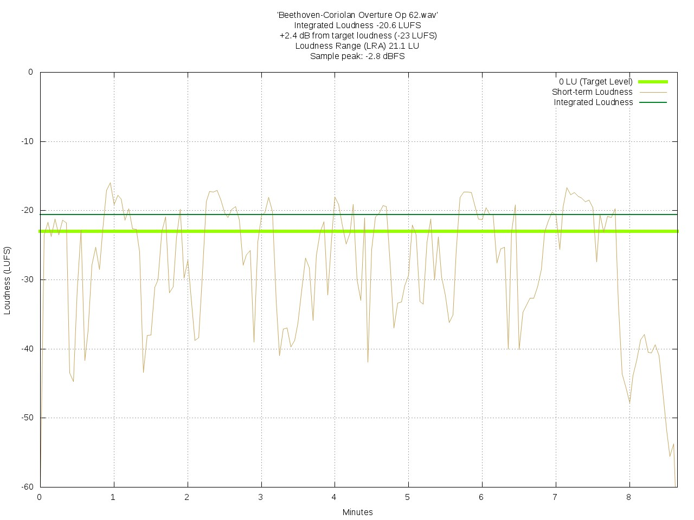
- You need a computer with at least 2 processor cores.
- 2 GB of RAM (there probably is not much advantage having more).
- Ubuntu Linux 12.04. This version of Ubuntu will be supported by
Canonical until April 2017, meaning there will be security updates for 5
years after the release.
- A person that is able to set up and update an Linux server.
- 1 Gbit ethernet is recommended.
Note:
Only files that have all audio channels of the mix in the same audiofile or
audiostream can be processed. For example you cannot process a 5.1 mix that
is split up to 6 separate files. Loudness calculation won't know these files
belong together.
- First install Ubuntu 12.04. If you don't know whether to choose the 32
or 64 bit version, use the 32 bit one if you have less than 4 GB of ram
and 64 bit if you have more.
- It is recommended to use the JFS - filesystem for all disks, since the
default filesystem ext4 has some quite serious bugs / design flaws that
are probably never going to be fixed. JFS was designed by IBM to be a
very fault tolerant filesystem for big database servers. It is able to
survive power outages and has been in serious production use for years.
- During the installation of Ubuntu, you are prompted to create the
first user. It is important to use a password for this account, do not
leave the password empty.
- After Ubuntu is installed log in as the first user you created during
installation.
- Next you must install python3. Give the following command in the
terminal window (you can copy and paste it from here):
sudo apt-get -y install python3
- The command will ask for your password. Type in the password and press
enter and python3 installation begins.
- Now that python3 is installed you can start the FreeLCS installation
program, it will ask you some details about how you would like the
loudness correction server to work and installs the rest of the programs
it needs.
- Next unzip the FreeLCS - package by clicking it with the right mouse
button and selecting " Extract Here". A new directory
will be created and all FreeLCS files will be unzipped there.
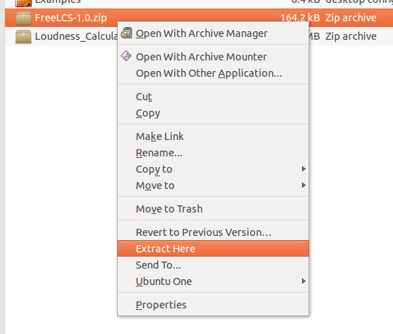
- Next we need to make the installer program executable. Navigate to the
directory that unzip created and right click the "installer.py"
program and select "Properties" from the menu.
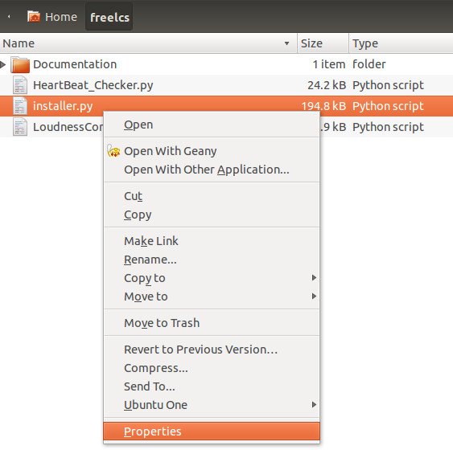
- Click the "Permissions" tab and select "Allow
executing file as program" and the click "Close".
The installer program can now be run.
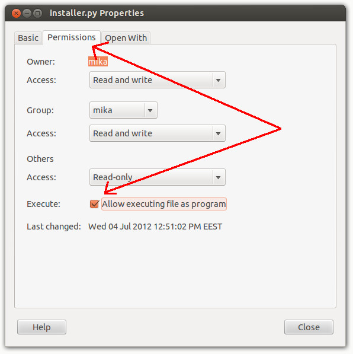
- Double click the "installer.py" - file. A menu will
appear, click "Run".
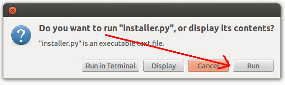
- The installer program starts. First you will see the welcome screen,
click "Next".
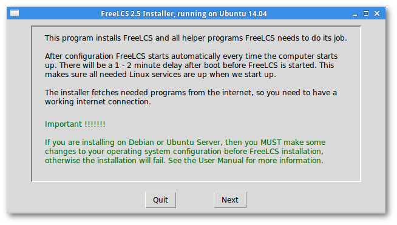
- The next screen will ask about some details of you would like loudness
correction to work.
- The first section will allow you to define the path to the target
directory. Some directories are automatically created inside this target
directory, the most important of these is the 'HotFolder'.
HotFolder is the folder where users can drop in files for processing.
HotFolder is by default located in: 'Target Directory /
LoudnessCorrection'.
- The second section allows you to select English or Finnish as the
language for directories and text in loudness history graphics files.
- 'Number of processor cores to use' lets you define
how many processor cores are used in loudness calculation and file
processing. When a file is being processed it always ties up two
processor cores. The speed of processing is most often dependent of the
raw speed of disks. If your HotFolder is on an fast disk for example a
Raid device, then it often speeds up processing if you select here more
processor cores than you actually have. For example for our test server
that has one Intel Core 2 Duo (dual core) processor, 2 GB of Ram, 3 x 1
TB Sata - disks in Raid 0 for HotFolder, the sweet spot for speed is six
cores even though we only have two. See: Optimizing
processing speed.
- The last section of the window lets you define how long files are
allowed to stay on the server before they are automatically deleted. The
default value here is 8 hours (480 minutes).
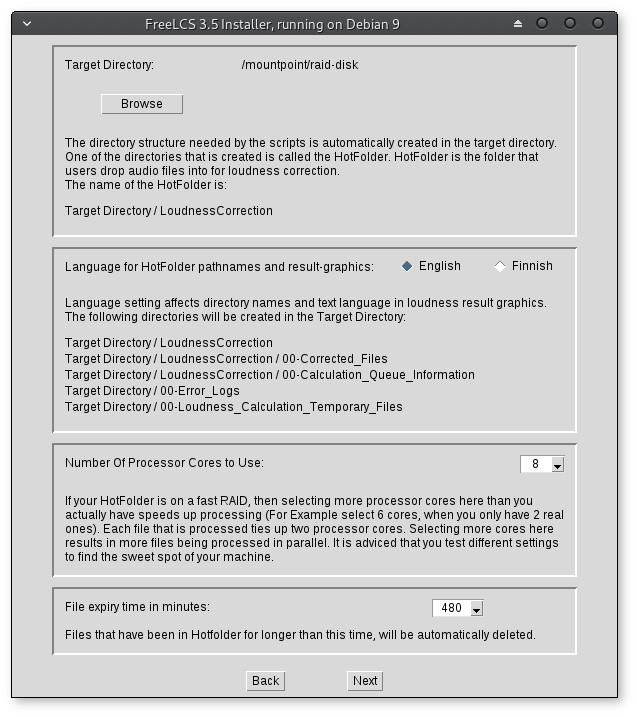
- The next window lets you select if you want to email possible error
messages to the admin.
- Input your email details here. Smtp - server is the email server you
use to send email out to the world.
- You can add max 5 addresses that the messages are sent to. When you
have filled in email details, click the "Send" - button to test that
email sending really works. The bottom of the window displays a message
if email sending is succesful.
- HeartBeat Checker is a separate program that monitors the health of
the loudness correction program. If Loudness correction crashes for some
reason, HeartBeat Checker sends you email. If your loudness correction
server is mission critical then enable this option.
- (Note that the password you give here is not encrypted when it is
stored in the file "/etc/LoudnessCorrection_Settings.pickle".
Scripts can not securely encrypt anything since the scripts themselves
can be easily read and any encryption method used can be found out by
examining the source code :)
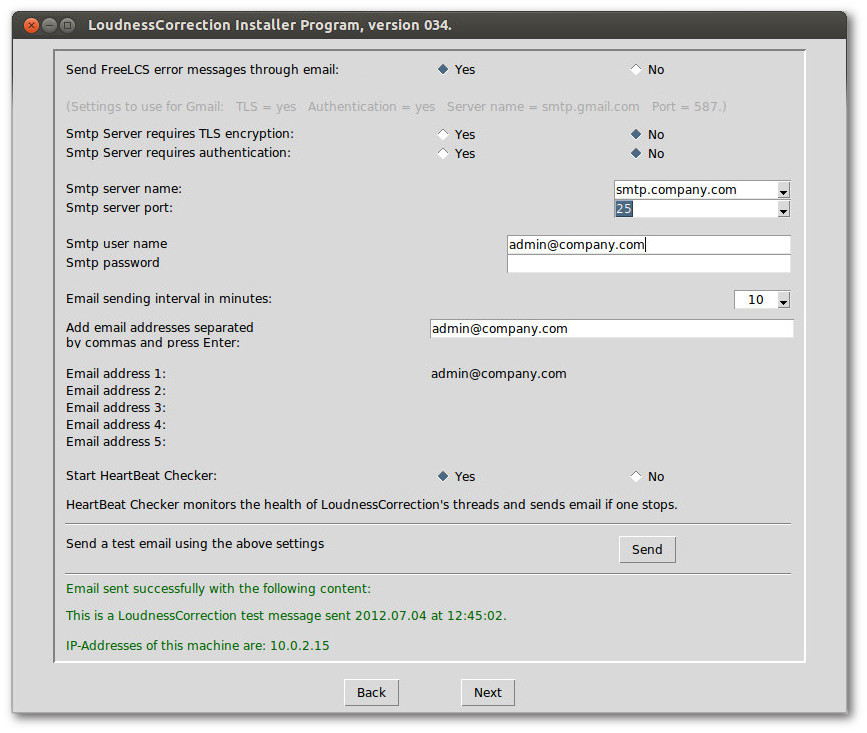
- The next window lets you select if you want "Html
progress report" written to the HotFolder. It is an
html-page that can be viewed with a web-browser and it displays the
loudness calculation queue inside the server. On the page you can see
how many unprocessed files are waiting to be processed and names of the
last 100 processed files and times they were processed. The "html
progress report" is a tool for the admin to see what's going on inside
the server, this feature is not needed by normal users. Current time is
displayed on the page also and if it is advancing then the server is
alive and well :) The default path for the "Html progress report" is "Target
Directory / LoudnessCorrection / 00-Calculation_Queue_Information /
00-Calculation_Queue_Information.html".
- The "Html progress report" is updated once in every 5 seconds. During
heavy file traffic the disk can become so busy that loudness correction
is not able to write the progress report on the disk as often as it
tries and if you view the page it seems to be frozen. This problem can
be solved by creating a ram-disk and writing the "Html progress report"
there instead of hard disk. Ram-disks can be written and read very
quickly and traffic jams on hard disks don't affect them at all.
- If you wan't the progress report to be written on a ram-disk, then you
can select which of the operating systems ram-devices are used to create
the ram disk. You need to change the default setting of "/dev/ram1" here
only if you know you have created other ram-disks for other purposes and
you know that device "/dev/ram1" is already used for something else.
- Lastly you can select which user account is used when loudness
correction and heartbeat checker programs are run. These two programs
are always run as an "unprivileged" user. If you only created one user,
then this user is used by default.
- If you are not sure what to select on this window then just leave the
defaults as they are and click "Next". Defaults are ok for most users :)
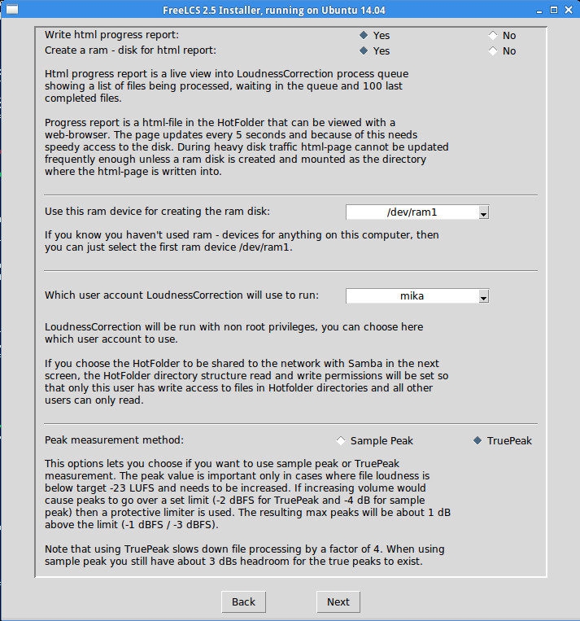
- The next window will let you select if you wan't the "HotFolder" to be
shared to the network. Select "Yes" if you wan't users to be able to
drop in files to the HotFolder through the network.
- If you select "Yes" the the samba-server is used for creating the
network share and the default samba configuration is shown on the
window. You can edit the configuration in the window, but only change it
if you know your settings will work in your network. In all other
cases just leave the configuration as it is and click "Next".
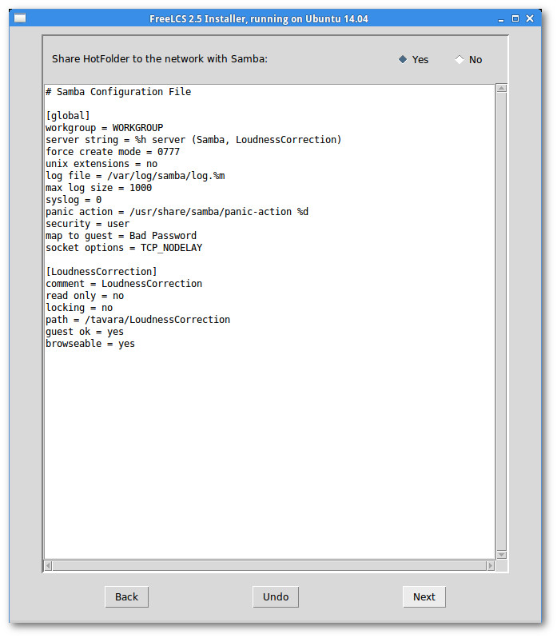
- The next window asks for the "root" - users password. It is the same
password that you set up for the first user you created during Ubuntu
installation. The root password is needed when loudness correction
settings and programs are written into Linux system directories.
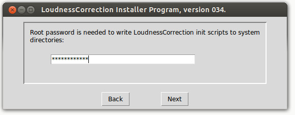
- The next window will list all external programs that FreeLCS needs to
do it's job. Just click the "Install" - button and the
installer will download and install all needed Ubuntu packages. It will
also download libebur128 source code, compile and install it.
- The installation takes a couple of minutes and the window freezes
while the installer launches external programs to do the actual
installation. So don't try to click on anything on the window while the
installation is going on. The installer shows messages on the bottom of
the screen telling what it is doing at the moment.
- After all required programs are installed, the installer installs
FreeLCS programs into Ubuntu's system folders.
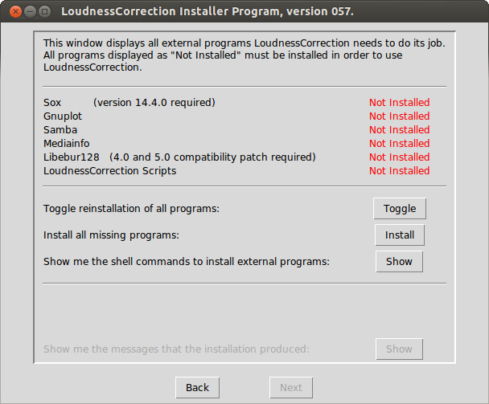
- When the installation is finished the window looks like the screenshot
below. Click the button "Next".
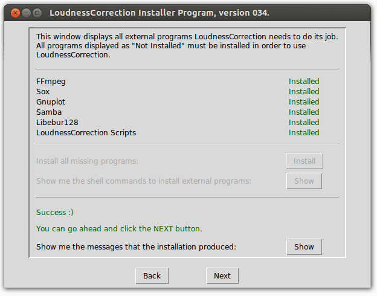
- The last window tells you that you can start loudness correction now
by typing the commands displayed in the window into a terminal window.
The easiest way to start loudness correction however is to restart the
computer.
- There is a deliberate delay for starting up loudness correction and
heartbeat checker. This makes sure all needed system services are up
when our scripts run at computer startup.
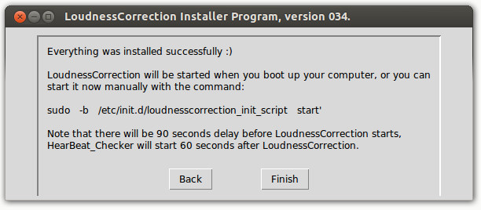
FreeLCS is made up of these files:
/etc/init.d/loudness_correction_init_script
This script is started by a link in the /etc/rc2.d -
folder when the computer starts up (See the file below). This file creates
the ram disk, creates directories in the HotFolder if they do not exist and
sets their permissions so that network users can not delete critical files
and folders in the HotFolder. This script also starts up
LoudnessCorrection.py and HeartBeat_Checker.py - programs.
/etc/rc2.d/S99loudness_correction_init_script
This file is a link that points to "/etc/init.d/loudness_correction_init_script"
this link is used to start up "/etc/init.d/loudness_correction_init_script"
when the computer starts up. Without this link the script "loudness_correction_init_script"
won't run.
/usr/bin/LoudnessCorrection.py
This is the main program of FreeLCS. It is the one that processes all files
dropped into HotFolder.
/usr/bin/HeartBeat_Checker.py
This program is started only if you selected it in the installer. It
monitors the health of the LoudnessCorrection - program and sends email if
LoudnessCorrection crashes.
/etc/LoudnessCorrection_Settings.pickle
The settings that you defined when running the installer are stored
in this file. LoudnessCorrection.py and HeartBeat_Checker.py both read their
settings from this file when they are starting up.
/etc/samba/smb.conf
This is the configuration file for the samba server that shares the
HotFolder to the network. Hotfolder is shared to the network only if you
selected "Share HotFolder to the network with samba"
= "yes" in the installer.
FreeLCS usage is very simple.
- First you mount FreeLCS HotFolder through the network.
- Then you drag some files to the HotFolder .
- A couple of minutes later you can drag loudness corrected files back
from "HotFolder / 00-Corrected_Files" to you computer .
Mounting of the HotFolder is explained in it's own chapter.
- When you mount the HotFolder your operating system automatically opens
a window that shows the contents of the HotFolder. The examples below
are from Mac OS X, but the same principles apply to all operating
systems.
- The root of HotFolder is where you drag files you want to be loudness
corrected.
- Inside the root - folder there are two other folders: "00-Corrected_Files"
is where corrected files and loudness calculation history graphics
appear. The folder "00-Calculation_Queue_Information"
is used to store two files that normally aren't of interest to normal
users. The first one is "00-Calculation_Queue_Information.html".
That is an html-file that can be opened in a web-browser. The page is
updated oevery 5 seconds and it shows how many files are waiting to be
processed, which files are currently worked upon and so on. The second
file that is stored in this folder is "00-HeartBeat.pickle".
LoudnessCorrection writes periodically timestamps and other information
in this file and HeartBeat_Checker.py monitors this file. If information
in the file stops updating then LoudnessCorrection has crashed and
HeartBeat_Checker sends email to the admin.
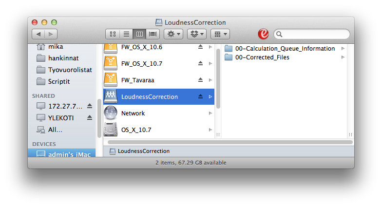
- For normal users the only folders of interest are the root of the
HotFolder and the "HotFolder / 00-Corrected_Files".
- To process a file drag it in the root of the HotFolder.
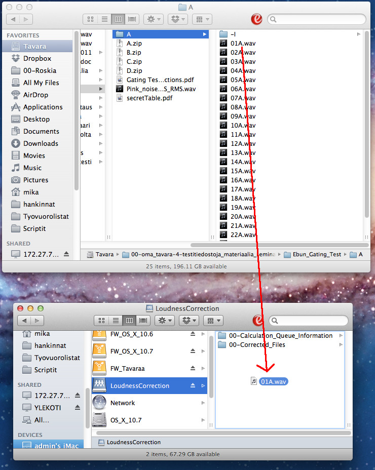
- The file will be copied over the network to the FreeLCS - server.
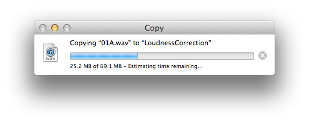
- When the file is copied over navigate to "00-Corrected_Files".
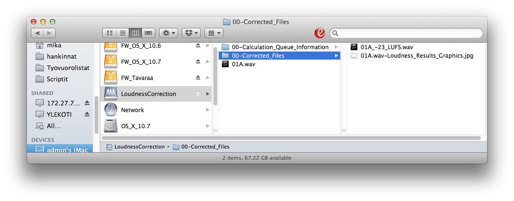
- In a while files start to appear there. The first file will be the
loudness calculation history graphics file and some time after that the
loudness corrected sound file appears. Drag the corrected sound files
back to your computer. Each corrected file will have the string
"_-23_LUFS" added at the end of its name.
- All files in the root of the "HotFolder" and "00-Corrected_Files"
will be automatically deleted after a time period that you defined in
the installer program. By default it is 8 hours.
When you drop in files to the server the following things happen:
- First files are searched for audio streams. If some are found then
information about them is recored. If no audio is found in a file then
an error graphics file is created to inform the user.
- If the fileformat and channel count are natively supported by
libebur128 then the file is sent to loudness calculation. Otherwise
audio streams are extracted from the file and losslessly compressed to
flac - format. (Flac is used since it compresses losslessly saving disk
space and supports very long files (over 4 GB) and channel counts up to
8 channels. Saving is also faster than saving in an uncompressed format
when there are many channels in the file). After audio stream extraction
the original file is no longer needed so it is deleted from the
HotFolder. Then the extracted audio streams will be put in the
hotfolder.
- Two simultaneous loudness calculation processes are started for each
file. One calculates integrated loudness and searches for the highest
peak value in the file (sample peak or TruePeak depending on options
selected during installation). As disk reading is usually the bottleneck
of the system, doing two calculations on the same file simultaneously
speeds up processing. This is due to the fact that the first process
reads the file into operating system file cache as it reads through the
file and the second process won't have to read the physical disk at all,
the data can be read from the very fast file cache in Ram - memory.
- If loudness of a file is below the target level and needs to be raised
and sample peaks would go over our defined max value after this volume
increase (-3 dBFS sample peak / -1 dB TruePeak), then a protective
limiter is used. Note that limiter is not used in cases where the
defined max peak value would not be exceeded after loudness correction.
Most of the time people tend to do too hot mixes and loudness needs to
be adjusted down and then no limiting is needed.
- At this point a loudness history graphics file is created.
- Then a loudness corrected version of the file is created. The loudness
is adjusted so that it will be at the target -23 LUFS level. If a
protective limiter was used then the resulting highest sample peaks will
be at maximum -3 dBFS (if sample peaks were used) and -1 dBFS if
TruePeak measurement was used. TruePeak measurement slows down
processing by a factor of 4 so use TruePeak metering only if you really
need it. When using sample peaks there will always be at least 3 dBs
headroom for the true peaks to exist, so it is quite safe to use only
sample peaks. No clipping should ever happen even in the worst case
scenario.
- After this the original file and the resulting corrected file and
loudness history graphics file are queued for deletion. Deletion happens
after a time period that by default is 8 hours.
- Note that loudness variations inside a file are not touched in any
way. Only the "master volume" of a file is adjusted up or down
preserving all relative loudness variations. This is how EBU R128
standard is designed to work. You can still use loudness variations any
way you wish but it is your responsibility to use then wisely :) EBU
R128 is designed to eliminate loudness variations between different
programs in the transmission.
- A loudness history graphics file shows loudness variations and other
loudness calculation results for the original uncorrected file.
- The brown line shows the short-term loudness, it shows how loudness
varies across time in the file.
- The bright green horizontal line shows the EBU R128 target level that
is -23 on the LUFS scale (0 LU also means -23 LUFS).
- The dark green horizontal line shows the integrated loudness of your
file. It averages the loudness across the length of your whole file into
a single number. This is the loudness of the file and for it to be at
the target level according to the EBU R128 standard it must be -23 LUFS.
- All files will be loudness corrected to have integrated loudness of
-23 LUFS.
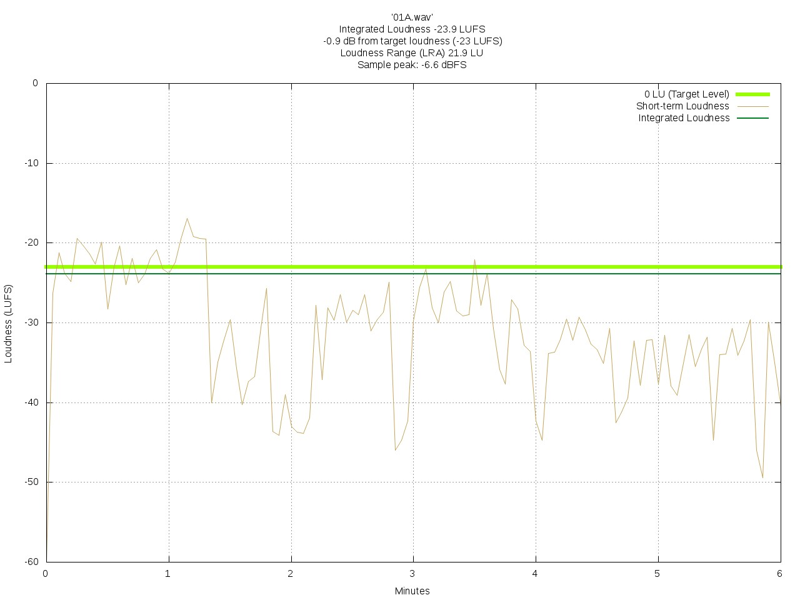
- First click an empty spot on your desktop, this activates the Finder -
program.
- The keyboard shortcut to bring up the "Connect to Server" - window is
cmd + k, so keep the cmd pressed and press k.
- Now you need to have your servers ip-address. Write "smb://your
servers ip address" in the prompt and press "Connect".
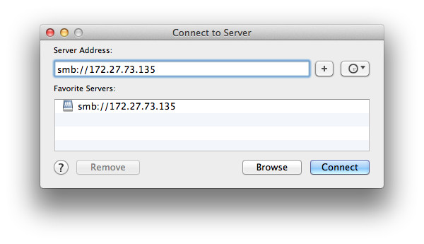
- The next window lets you choose between logging in anonymously or as a
registered user. The network share on the FreeLCS - server is configured
to accept only anonymous logins. So don't write in any username or
password, just click "Guest".
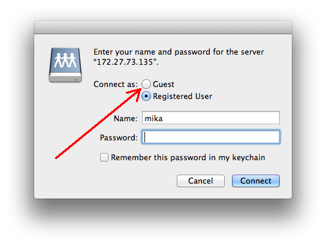
- Now the window changes and looks like the one below. Click "Connect".
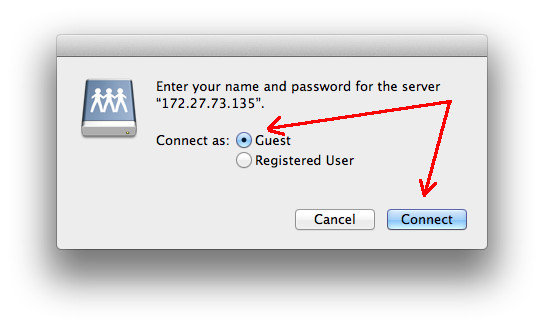
- The FreeLCS network share is mounted and Finder opens an window
showing the contents of the HotFolder. Now you can start using the
server :)
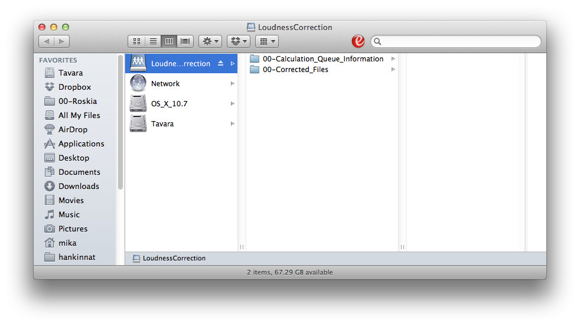
When you have mounted the HotFolder you can make an alias that stays on
your desktop. You can then skip all the steps above and mount the
HotFolder just by double clicking on the alias.
- First you must have mounted the HotFolder.
- Open an Finder - window and scroll to the bottom of the device list on
the left panel. You should see an entry there that has the name of your
computer, by default it is "admin's Mac". Click on it.
- Now you should see all mounted devices in the Finder window and "LoudnessCorrection"
should be among them. Start dragging "LoudnessCorrection" out of the
finder window to the desktop and before you let go of the mouse button
press and hold cmd and alt -
buttons. You should see a curved arrow on top of the LoudnessCorrection
- icon. Keep pressing cmd and alt and let go of the mouse button.
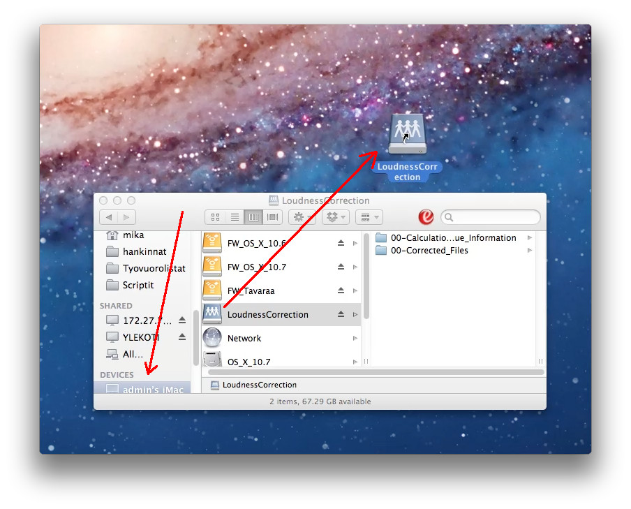
- Now on your desktop there should be an "LoudnessCorrection" - icon
with a curved arrow on top of it. An icon like this is called an alias.
- From now on you can mount the LoudnessCorrection HotFolder just by
double clicking on the alias.
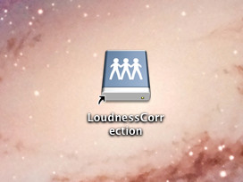
- Click on the "Start" - button and click on the
entrybox on the bottom of the window.
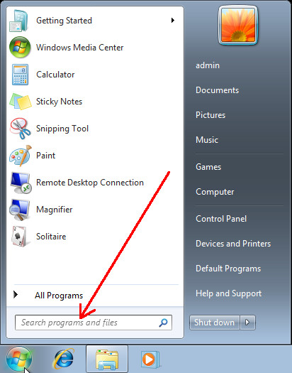
- Write the address of the server into the entrybox. The address
must have two backward slashes at the begging of it and the
address must end with the mount name "\LoudnessCorrection" (See picture
below). Press enter.
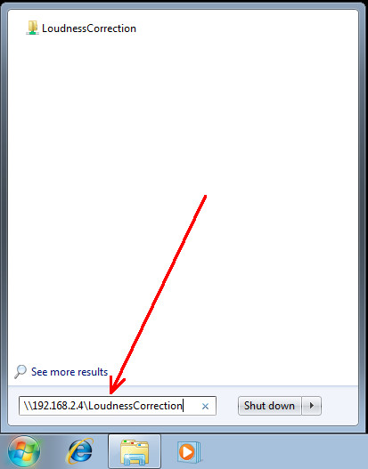
- Windows mounts the HotFolder of the server and opens it in a file
explorer window. Now you can start using the server :)
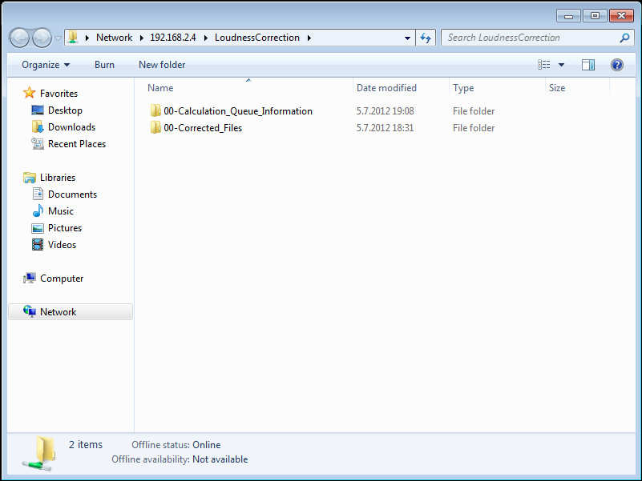
You can tell windows that you want the HotFolder always to be mounted when
the computer starts up.
- Open windows file explorer, click on "Computer". Now some new
options appear on the upper part of the window. Click "Map
network drive".
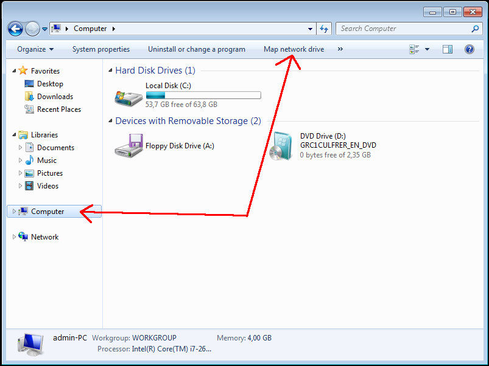
- The next window offers a free drive letter to assign permanently to
the drive. In our example windows offered the letter Z:
- Write the address of the server in the window. The address must start
with two backward slashes and end with "\LoudnessCorrection". Make sure
that the option "Reconnect at logon" is tagged, without
it windows won't make the mount when windows starts up. Click "Finnish".
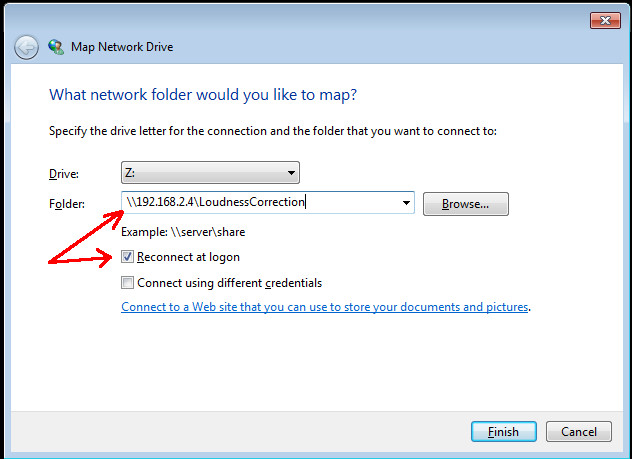
- Windows mounts the HotFolder of the server and opens it in a file
explorer window.
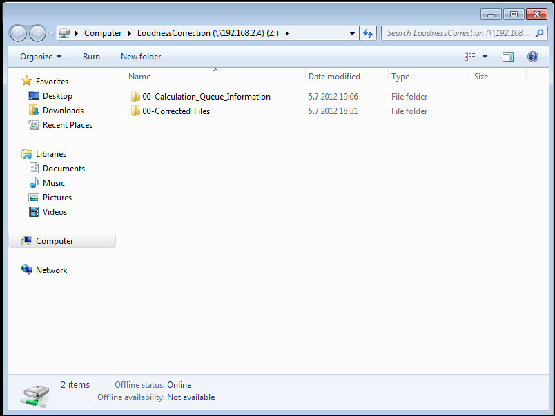
If you selected "Write html progress report" = "yes"
in the installer then an html file will appear in "HotFolder /
00-Calculation_Queue_Information / 00-Calculation_Queue_Information.html".
This file can be opend in an web-browser and it shows an view inside the
loudness calculation queue. The html progress report is updated every 5
seconds and it shows how many files are waiting for a processing slot to
open, what files are currently processed and the names of 100 last files
that were processed and the time processing was finished.
The upper part of the window shows the names of next 10 first files that are
coming in for processing and above that the total number of files waiting in
queue is shown. Date and time are also shown and updated every 5 seconds so
you can easily check that the server is up and running.
The middle gray part shows the names of files that are currently being
processed. The number of files that are simultaneously processed depends on
what you selected as the "Number Of Processor Cores To Use"
in the installer. Each file is simultaneously processed by two processor
cores so if you selected six cores to be used, then three files can be
processed at the same time (as in the example picture below).
The bottom of the page shows the last 100 files that were processed.
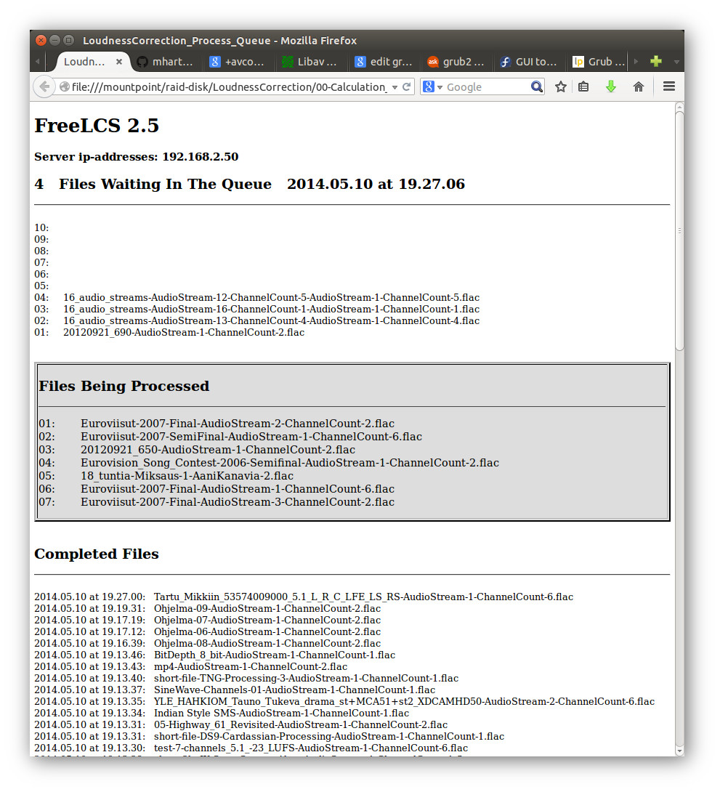
The server needs to have an address that does not change. You network
administrator can give you an static ip-address to use.
- Click on the double arrow on the top right corner of Ubuntu's desktop,
select "Edit Connections".
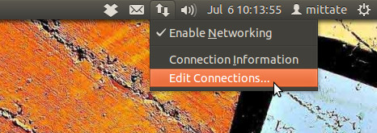
- Click on tab "Wired" and activate the "Wired
connection 1" by clicking on it and click "Edit".

- Click the "IPv4 Settings" - tab and then the text "Automatic
(DHCP)".
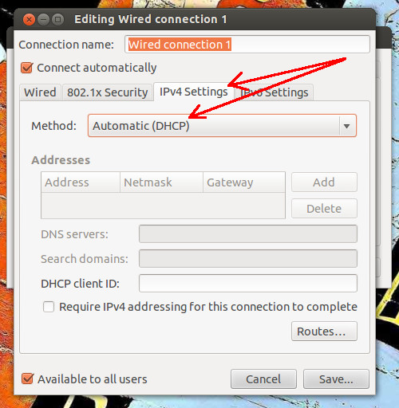
- Select "Manual" from the drop down list.
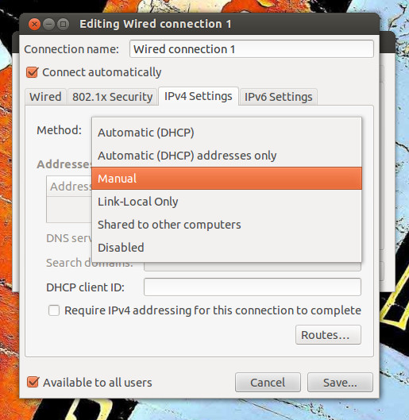
- Click "Add" and type in the details of your network
connection. You need to know the following information which the network
admin will be able to give you.
- The static address for the server
- Network mask
- The ip-address of the gateway machine. All traffic from your network
to internet goes through this gateway machine.
- The ip-addresses of your network name servers (DNS).
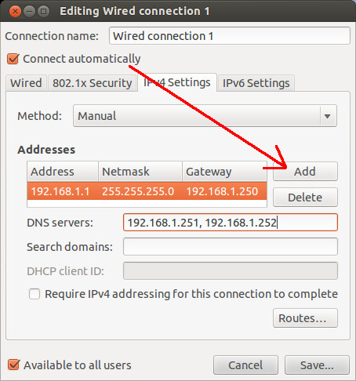
If you have a fast enough processor, for example 1 x Intel Core 2 Duo, then
the processor is able to process files much quicker than a single hard disk
is able to serve it. When multiple files are processed at the same time,
there will be lots of reading and writing going on and the speed of the disk
becomes the bottleneck of the system. You can get more speed out of you
system by setting up three disks in a raid 0 array and putting the HotFolder
onto the raid.
The other thing that affects processing speed is the setting "Number
Of Processor Cores To Use" in the installer. Each file that is
processed ties up two processor cores, but if you have a fast disk and a
hyper-threading capable processor, you might get more speed by setting the
"Number Of Processor Cores To Use" to a bigger number than you have actual
physical processor cores.
After you have set up raid you can find the sweet spot of your system by
doing a simple test.
First collect a bunch of typical files that the server is going to process
when doing real work. The total size of the files should at minimum be
double the size of ram you have in your server, but more is better. Save the
files on the server, but don't put them in the HotFolder yet.
- Delete all files from the HotFolder.
- Run the FreeLCS installer and set the "Number Of Processor
Cores To Use" to the number of physical processor cores you
have and reboot.
- Wait for two minutes after the computer has booted up so that
LoudnessCorrection has time to start also. (There is a deliberate 90
second delay before LoudnessCorrection is started up).
- Open the html-progress report in your web-browser and see that the
time there is advancing. If not then LoudnessCorrection is not yet
running.
- Make a copy of the test files to the HotFolder by creating hard links
for the files in the HotFolder. This makes the files appear instantly in
the HotFolder.
date ; ln
/path_to_test_files/* /path_to_hotfolder/
- This command displays the current time which also is the time files
were linked to the HotFolder, take note of the time.
- Wait for processing to finish and take a look at the html-progress
report and see the time the last files processing finished.
- Calculate the time it took.
- Repeat the process from step 1, but add two to the "Number Of
Processor Cores To Use" in the installer.
You should find the fastest processing time in 2 - 4 rounds of the test.
Our test server sweet spot is to use six cores even though there is only
two. Our test server specs are:
1 x Intel Core 2 Duo Processor
2 GB Ram
1 TB hard disk for Ubuntu
3 x 1 TB hard disks in a software raid 0 array for the "HotFolder".
1 Gbit Ethernet
The speed test results for our test server were:
- Use 2 Cores: 20 minutes 11 seconds
- Use 4 Cores: 14 minutes 10 seconds
- Use 6 Cores: 13 minutes 09 seconds
With more than 6 cores the processing time started to increase rapidly.
Linux software raid configuration is a bit out of the scope of this document
and I don't have much experience with it :) Here are the steps that were
required to get our server's raid set up. The steps I followed were mostly
from here: http://www.linuxhomenetworking.com/wiki/index.php/Quick_HOWTO_:_Ch26_:_Linux_Software_RAID
Warning !!!!!!! Linux knowledge is required here. If you are not
careful these commands can mess up your system :)
- Install 3 Sata disks in the computer. Ubuntu gave our disks
device-names: sdb, sdc , sdd.
- Get root-permissions with the command: sudo su
- Partition each disk as type: Primary, fd
(Linux raid autodetect).
- Install Linux raid software: apt-get install mdadm
- Create a raid 0 device from the three disks: mdadm --verbose
--create /dev/md0 --level=0 --raid-devices=3 /dev/sdb1 /dev/sdc1
/dev/sdd1
- If mdadm complains that: "Device Or Resource Busy", then mdadm may
already be using some of the disks and you need to tell it not to. The
command: cat /proc/mdstat lists raid-devices,
stop them with the command (device name is md127 in the example, check
the real device name from the output of: cat /proc/mdstat): mdadm
--stop /dev/md127 now try creating the
raid-device again with the command on the previous line.
- When raid-device creation succeeds without error messages, format the
raid device with the JFS filesystem: mkfs.jfs /dev/md0
- Now the raid device exists, but Linux forgets about it in the next
boot unless we tell it to configure it again when booting up. The next
commands will save the configuration:
cd /etc/mdadm
mv mdadm.conf mdadm.conf.orig
echo "DEVICE partitions" > /etc/mdadm/mdadm.conf
mdadm --detail --scan >> /etc/mdadm/mdadm.conf
- Next make a directory for mounting the raid: mkdir
/mountpoint/raid-disk and make it readable
and writable for everyone: chmod -R 777
/mountpoint
- Add the device to your /etc/fstab so that it gets automatically
mounted next time the computer starts up. Add the following line in
/etc/fstab:
/dev/md0 /mountpoint/raid-disk
auto defaults
0 0
- Now reboot the machine and if the raid-disk was successfully mounted
then make the directory structure on the raid-device readable and
writable for everyone: chmod -R 777
/mountpoint
- In case of trouble this command tells about active raid-devices and
disks that belong to them (check that the name of the active raid
matches the name used on the /etc/fstab): cat /proc/mdstat
- Never process audio channels from the same mix separately from each
other. Processing left and right channels of a stereo mix separately
results in loudness being 3 dBs too high. All audio channels of a mix
must be in the same file or audiostream of a file.
- Silence does not affect loudness calculation. You can cut off silence
after loudness correction without affecting the integrated loudness of a
file.
- It might sometimes be useful to 'normalize' raw material early in the
video editing phase of a project. You might have a project that is made
up of several independent parts that need to be loudness corrected
separately. An example of this might be a program where a studio host
talks and plays cartoons for kids. The studio sections of the program
and each cartoon will have different loudness characteristics.
After you have loudness corrected each section separately there might
not be any need for audio post production anymore.
- Loudness correction does not touch the internal dynamics of a file. If
you have too wide loudness variations they will be there after loudness
correction too. Correction only adjusts the 'main level' of a file. If
integrated loudness of a file is -19 LUFS, loudness correction will make
all parts of the file 4 dBs quieter and relative loudness variations
inside the file will remain the same. This is how EBU R128 standard is
designed to work, you can still have loud and soft parts in your mix,
but it is your responsibility to use them wisely :)
- FFmpeg seems to support MXF - files also, but processing these might
be problematic. Inside an MXF - file audio channels of a mix might be
stored together in one file or separately and loudness correction has no
way of knowing what is the case.
The server can be made quite maintenance free by:
- Making the server boot automatically after an power outage.
- Making the server install all security updates automatically.
- Making the server automatically reboot weekly so that all security
updates are applied.
To make the server boot automatically after an power outage you need to find
an option in the computers bios that says something like:
"Restart after power failure".
- Then tell Ubuntu to install security updates without human
intervention.
- Press the "windows" key on the keyboard to bring up Ubuntu search
function, write: update
- You should now see an icon for "Update Manager", start it up by
clicking on it.
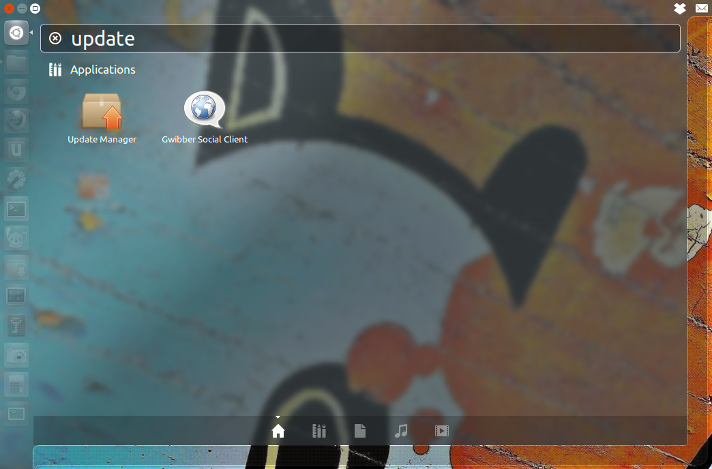
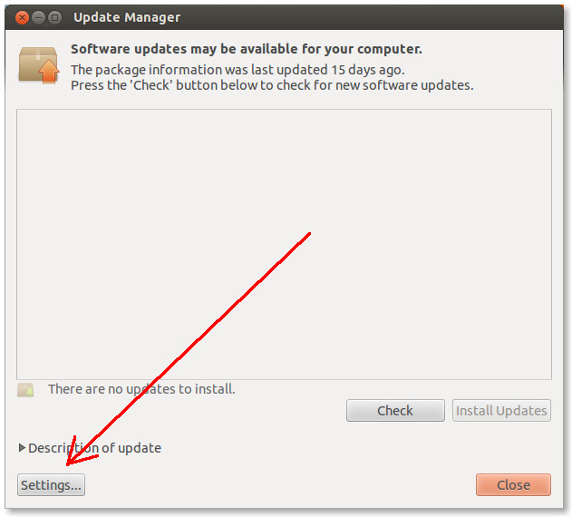
- Click on the "Updates" - tab and then on the box "When
there are security updates:".
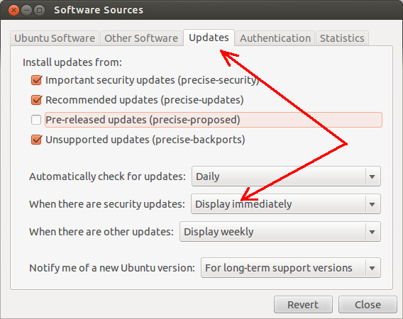
- Select "Download and install automatically".
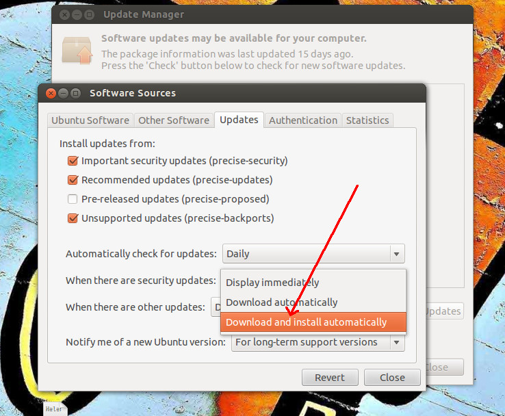
- Ubuntu asks for your password.
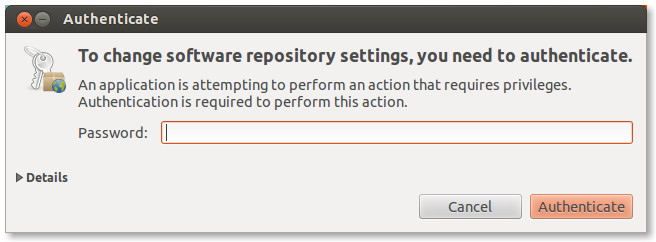
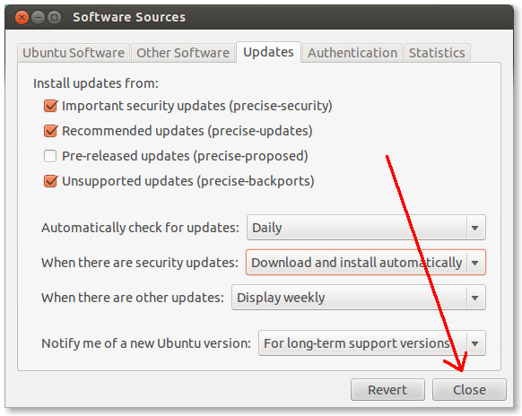
Now security updates are downloaded and installed automatically. Some of
them are applied immediately but some of them (new versions of the Linux
kernel) may come into effect only after a reboot.
- Next we need to make the computer restart automatically once a week. A
good time to reboot might be for example: every monday morning
at 07:00 am.
- Crontab can be used to run commands at preset times.
- Open a terminal an write in the commands (asks for root password):
sudo crontab -e
Ubuntu will prompt:
no crontab for root - using an empty one
Select an editor. To change later, run 'select-editor'.
1. /bin/ed
2. /bin/nano <----
easiest
3. /usr/bin/vim.basic
4. /usr/bin/vim.tiny
Choose 1-4 [2]:
Ubuntu wants to know which text based text editor you would like to use
to edit the crontab, press "2". This will select the "nano" - editor.
Now the text editor opens up and shows some text that was automatically
inserted into the crontab, navigate to the bottom of it and add the
following line:
00 07 * * 1 /sbin/reboot
This command will reboot the computer every monday at 07:00 am. Save the
crontab with keyboard command ctrl + o, then press enter
to accept the filename. Now that text is saved, exit the editor with
keyboard command ctrl + x. The crontab comes into effect
immediately.
The fields in the crontab command line mean (from left to right) (text
copied from crontab man page):
Field
Allowed Values
Minutes
0-59
Hours
0-23
Day of month 1-31
Month
1-12
Day of week 0-7 (0 or
7 is Sun)